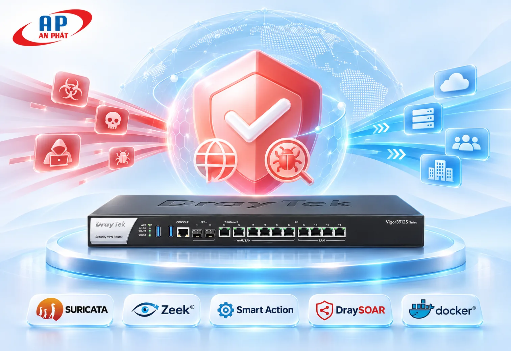
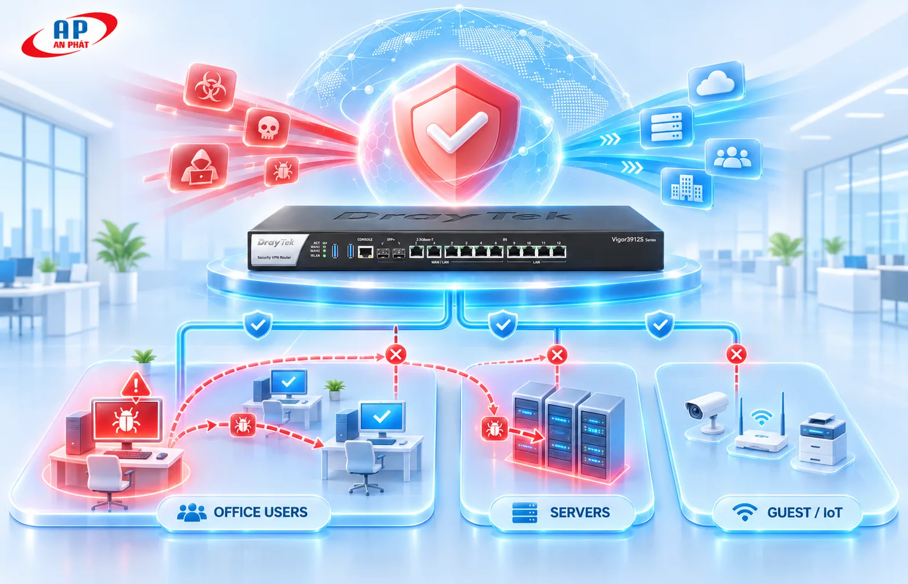
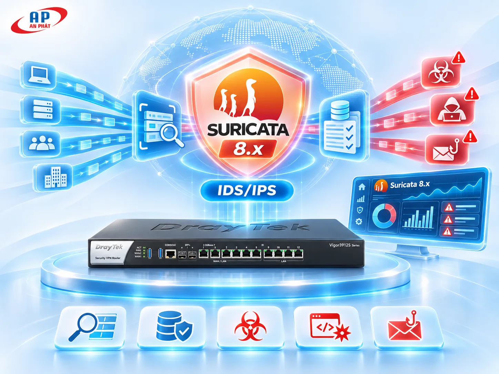
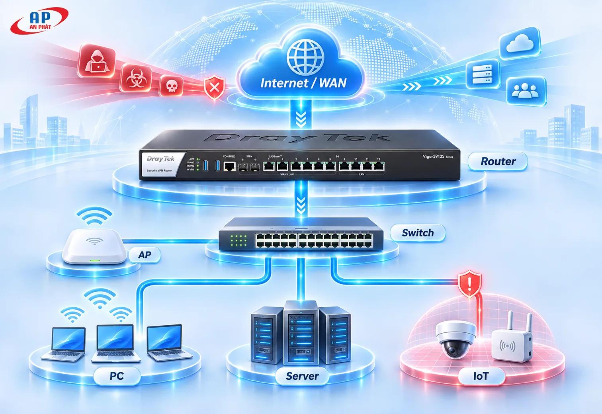
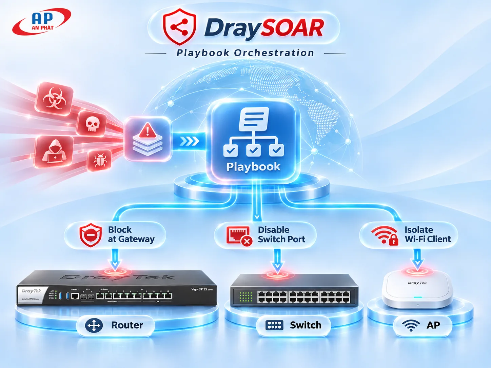
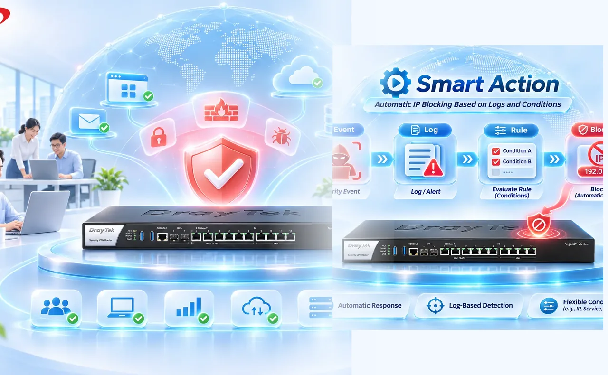
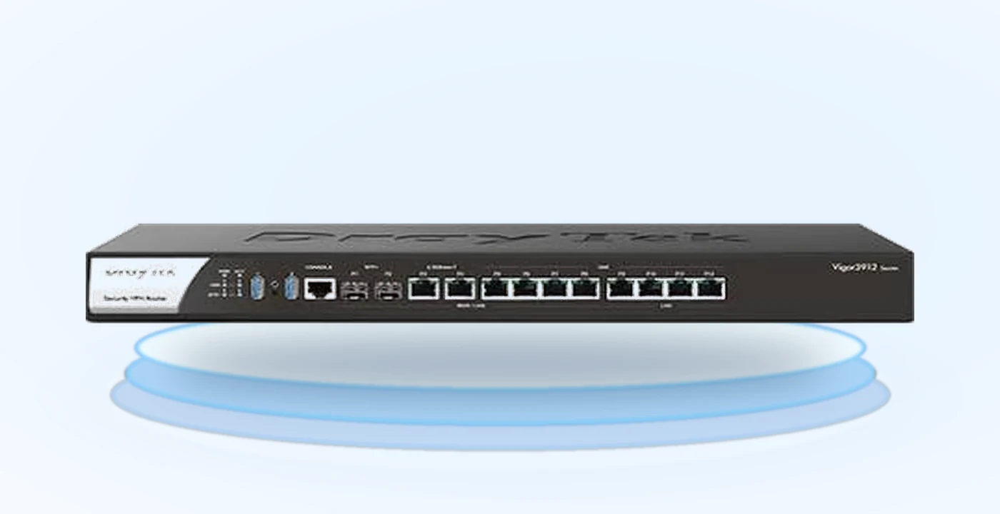
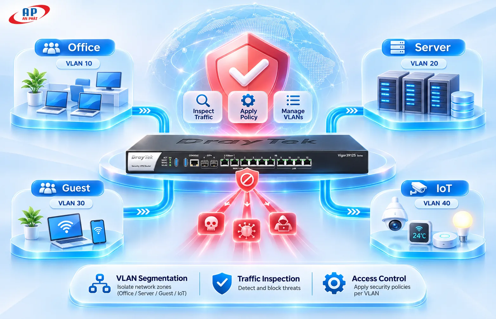

Hạn chế gián đoạn hoạt động
Phát hiện dấu hiệu nguy hiểm sớm hơn để đội IT có cơ sở phản ứng, giảm nguy cơ sự cố lan rộng.
BUSINESS CONTINUITYKhông dừng ở việc phát hiện tấn công. Kết hợp Suricata 8.x, Zeek, Smart Action và DraySOAR để nhận diện rủi ro, phản ứng theo chính sách và hỗ trợ ngăn mã độc lây lan trong mạng nội bộ.

¹ Các thông số theo tài liệu giải pháp và phụ thuộc phiên bản firmware, cấu hình và thiết bị được hỗ trợ.
Phát hiện tấn công ở cổng Internet là chưa đủ. Mối nguy có thể bắt đầu từ một máy tính, sau đó lan sang hệ thống nội bộ.

Chọn từng lớp công nghệ để thấy vai trò của chúng trong khả năng bảo vệ doanh nghiệp.

Hơn 60.000 rules theo tài liệu dự án để nhận diện malware, exploit, phishing, DoS và kết nối C&C. Log cung cấp Priority và Classification để đánh giá tiếp.
Cơ chế phản ứng mô tả ở đây sử dụng log và chính sách của Smart Action/DraySOAR; không đồng nghĩa với việc chặn mọi gói tin theo kiểu inline.
Thử một kịch bản mô phỏng: máy tính nhân viên truy cập máy chủ đáng ngờ, hệ thống nhận diện và xử lý theo điều kiện bảo mật.
Suricata phát hiện dấu hiệu đáng ngờ. Zeek bổ sung ngữ cảnh kết nối để phục vụ đánh giá.
[SURICATA] Alert: suspicious outbound connectionChọn một điểm trên sơ đồ để xem cách Vigor3912S và hệ sinh thái DrayTek có thể phối hợp phản ứng.

Giám sát luồng lưu lượng thực sự đi qua Router, sử dụng Smart Action để chặn IP nguồn hoặc IP đích theo cảnh báo và chính sách cấu hình.
Khoanh vùng kết nối đáng ngờ ngay từ điểm kiểm soát tập trung.
DraySOAR sử dụng điều kiện và Playbook để điều phối Router, Switch, AP hoặc máy trạm tương thích. Nhờ đó đội IT giảm số bước xử lý lặp lại trong các kịch bản đã được phê duyệt.

Suricata và Zeek chỉ thấy lưu lượng đi qua Router. Muốn giám sát lưu lượng giữa các vùng mạng cần thiết kế VLAN và định tuyến phù hợp.
Chuyển các năng lực kỹ thuật thành lợi ích dễ hiểu cho chủ doanh nghiệp và đội ngũ IT.

Phát hiện dấu hiệu nguy hiểm sớm hơn để đội IT có cơ sở phản ứng, giảm nguy cơ sự cố lan rộng.
BUSINESS CONTINUITYPhối hợp chặn IP, ngắt cổng Switch và cô lập Wi-Fi theo điều kiện và hạ tầng hỗ trợ.
CONTAINMENTDùng Smart Action và Playbook xử lý các tình huống lặp lại theo chính sách đã thiết lập.
IT AUTOMATIONKhai thác nhiều lớp chức năng trên một Router; bộ máy Suricata mã nguồn mở theo tài liệu dự án.
INVESTMENT EFFICIENCYLog Zeek cung cấp ngữ cảnh DNS, kết nối và giao thức để phục vụ truy vết.
VISIBILITYRouter phối hợp với Switch và Access Point trong hệ sinh thái DrayTek.
CENTRAL MANAGEMENTNhững thông số quan trọng để đánh giá phạm vi giải pháp và thiết kế hạ tầng.

DrayTek Vigor3912SGiao diện trình bày sản phẩm · ảnh tham chiếuXem ảnh thật mặt trước Vigor3912S ↗¹ Thông số và phạm vi tính năng theo tài liệu giải pháp, có thể khác nhau tùy firmware và điều kiện triển khai thực tế.
Chia VLAN theo chức năng như nhân viên, máy chủ, khách và camera/IoT. Đưa các luồng cần giám sát qua Vigor3912S để áp dụng chính sách phù hợp.

Không theo cơ chế đang mô tả. Smart Action sử dụng log và điều kiện cấu hình để phản ứng chặn IP.
Khả năng cô lập phụ thuộc model, phiên bản firmware, cấu hình quản lý và Playbook được hỗ trợ.
Không. Lưu lượng không đi qua Router sẽ không mặc nhiên được Suricata/Zeek trên Router quan sát.
Không thể kết luận cho mọi tình huống. Cần đánh giá lưu lượng, yêu cầu bảo mật, hiệu năng và thử nghiệm theo môi trường cụ thể.
Đội ngũ AN PHÁT hỗ trợ tư vấn phương án phân vùng VLAN, giám sát mối đe dọa và xây dựng kịch bản phản ứng phù hợp với nhu cầu doanh nghiệp.
Để lại thông tin và nhu cầu của bạn tại biểu mẫu Google Forms của AN PHÁT.
Mở biểu mẫu tư vấn / báo giá ↗Liên kết sẽ mở Google Forms trong tab mới. Website này không thu thập dữ liệu biểu mẫu.